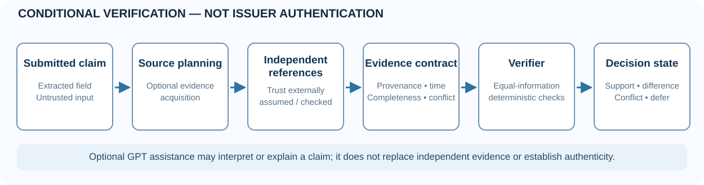

Supported
The compared claim agrees with enough eligible, independent reference evidence.
A financial statement can be internally consistent yet inconsistent with an independent reference. FraudRAG explores when retrieved evidence supports a document claim, contradicts it, or requires the system to defer.
Research scope: Not an authenticated bank-document forgery detector, fraud adjudicator, or production-certified service. Historical performance claims have been withdrawn pending independent reproducibility.
01 · Conditional decisions
Claims are evaluated against separately sourced reference information using conservative provenance, temporal, completeness and conflict checks. Unknown or untrusted information should not be promoted into a verified fact.
The compared claim agrees with enough eligible, independent reference evidence.
Qualified reference data demonstrates a field or value mismatch.
Admissible witnesses disagree; the system should surface the disagreement.
Available evidence is missing, incomplete, stale, or otherwise not sufficient.
02 · Architecture
A proposed research workflow, not an independently tested real-bank infrastructure diagram. Real-world issuer attestation and security must be established separately.

Architecture: the language model may assist with extraction or explanation; deterministic comparison and evidence admissibility remain explicit.
03 · Audited studies
All results below are specific to their study design. They do not constitute real-bank-fraud accuracy estimates. See linked runs and provenance for the full methodology.
| Study | Observed | Scientific boundary |
|---|---|---|
| V2 · Ledger match | GPT and same-information deterministic comparison both F1 = 1.000 on 28 synthetic cases. | No measured incremental fraud-classification advantage for GPT. |
| V4 · Acquisition policy | At invented budget 4, DP 70.69% vs prior-aware greedy 68.75% coverage, 720 generated test cases. | Paired uncertainty crosses zero; costs are simulated and the optimizer is classical. |
| V5 · Source interventions | 329 human-gold spans across 187 TAT-QA financial-report contexts. | Gold answer supplied; constructed source interventions, not fraud adjudication. |
| V6 · No source | Both GPT prompts abstained on all 24 supplied no-evidence questions. | No prompting advantage established in this condition. |
| V7B · Public financial QA | Approximate token-overlap F1 0.518 vs 0.534 across 64 paired public test questions. | CI includes zero; citation IDs do not prove semantic source support. |
Methodological corrections and incomplete earlier runs remain documented in the research evidence ledger. The public financial QA datasets are not genuine/forged bank-statement labels.
04 · Explore
Use only fictional or properly authorized non-sensitive documents. This is not a privacy-reviewed hosted service.
git clone https://github.com/akshaysharma1088/fraudrag.git
cd fraudrag
cp .env.example .env
# Review local provider configuration before running.
docker compose up -dExperimental V2–V7B scripts and raw archives are isolated on a separate research branch. Some jobs require paid APIs; do not run those workflows inadvertently.
05 · Citation & publication
“Evidence-grounded verification includes knowing when the available sources are insufficient.”
The project maintainer supplied the Zenodo DOI 10.5281/zenodo.23679156. The record's live title, version and license were not independently confirmed while preparing this page. Verify those details before citing or releasing a new version.
The Open Journals-format research manuscript remains an author-review draft, not a submitted or accepted IEEE paper. Scientific novelty, independent validity, prior-paper overlap and ethics/IP signoffs remain open.